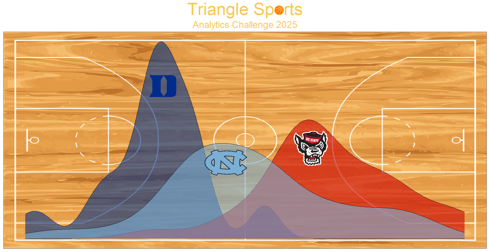

Triangle Sports Analytics Competition

Statement of purpose
The Triangle Sports Analytics Competition aims to bring together students who love sports analytics to compete in a prediction contest. Students may work individually or in a team of 2-5. All submissions are due by January 1, 2025. Read details about the contest on the Task page.
Timeline
Dates to be finalized.
- August 2024: Registration begins
- October 2024: Attend welcome event
- Duke, TBD
- NC State, TBD
- UNC, TBD
- November 2024: Pre-event workshop
- January 2025: Submissions due
- April 2025: Award ceremony